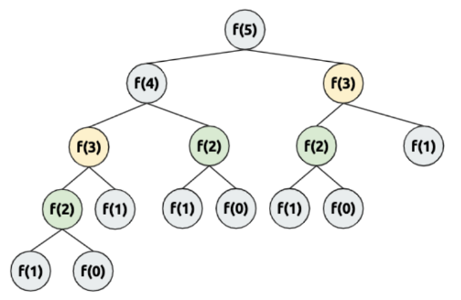
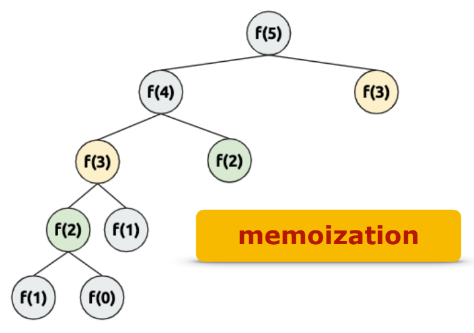

<!DOCTYPE html>
<html>
    <head>
        <title>2747번 피보나치 수</title>
        <link rel="stylesheet" type="text/css" href="피보나치수.css">
        <script src="https://cdnjs.cloudflare.com/ajax/libs/jquery/2.2.4/jquery.min.js"></script>
    </head>
</html>
<body>
    <div><input class="upbtn" type="button" value="Top" onclick="clickme()"></div>
    <script>
      function clickme() {
        window.scrollTo({top:0, left:0, behavior:"smooth"});
      }
    </script>
    
    <header>
        <div class="inner">
            <p class="name">Lee.GaHee</p>
            <div class="menu">
                <ul>
                    <li><a href="index.html">Home</a></li>
                    <li><a href="algorithm.html">Algorithm</a>
                        <div class="dropmenu">
                            <a href="imple.html">Implementation</a>
                            <a href="math.html">Mathematics</a>
                            <a href="dynamic.html">Dynamic.P</a>
                            <a href="graph.html">Graph</a>
                        </div>

                    </li>
                    <li><a href="#">Profile</a></li>
                    <li><a href="portfolio.html">Portfolio</a>
                        <div class="dropmenu">
                            <a href="#">Banchmarking</a>
                            <a href="#">Practice</a>
                        </div>
                    </li>
                </ul>
            </div>
        </div> 
    </header>

    <section style="background-image: linear-gradient(rgba(4, 9, 30, 0.6), rgba(4, 9, 30, 0.6)), url(dynamic.jpg);">
        <div class="background">
            <h1>피보나치 수</h1>
        </div> 
    </section>

    <div class="container">
        <div class="title">
            <a href="dynamic.html"></a><h2>2747번 피보나치 수</h2>
            <h4>#수학 #구현</h4>
        </div>
    
        <ul class="tabs">
          <li class="tab-link current" data-tab="tab-1"><br>Python</li>
          <li class="tab-link" data-tab="tab-2"><br>Java</li>
        </ul>
       
        <div id="tab-1" class="tab-content current">
            <script src="https://gist.github.com/Gahee1907/5552de8b3cbcff5590993129f5a4b00e.js"></script>
        </div>

        <div id="tab-2" class="tab-content">
            <script src="https://gist.github.com/Gahee1907/e9c78b5d46f66634e1fea8fe8f86d7f5.js"></script>
        </div>

        <div class="link">
            <a href="https://www.acmicpc.net/problem/2747">출처: https://www.acmicpc.net/problem/2747</a>
        </div>

        <div class="about">
            먼저, <strong>Dynamic Programming</strong>이란 동적 계획법이라 부른다. 동적 계획법은 큰 문제를 여러 개의 작은 문제로 나누어 풀고, 그것을 결합하여 최종적인 문제를 해결하는 것이다. 
            큰 문제의 수열의 규칙성이 작은 문제에서의 규칙성과 일치하기 때문이다.  그래서 값이 작은 문제에서 관계식을 해결해서 큰 문제로까지 적용시켜 해결하는 원리인 것이다.

            Dynamic Programming문제에서는 점화식이 문제 해결의 핵심이된다. <strong>점화식(Recurrence Relation)</strong>은 수열에서 인접된 항들 간의 관계를 식으로 표현한 것을 의미한다. 
            크게 Top-Down방식과 Bottom-Up방식이 존재한다.<br>
            
            <br>이번 문제에서는 Top-Down방식을 사용해 풀어보았다.<br>
            Top-Down방식은 임의의 지점(n)에서의 값을 구하기 위해 n지점에서 바닥(base)로 내려간 뒤 거기에서부터 다시 값을 만들면서 올라온다.
            임의의 지점에 바닥(base)으로 내려가는 방식이므로 함수의 재귀호출방식을 취하고 있다.
             
            f(5)를 구하기 위해 하위에 존재하고 있는 f(1),f(0)은 계속 구해져 오고 있다. 점화식을 기반으로 하고 있기 때문에 몇 번을 구해도 그 값은 동일하다.
            몇 번을 구해도 계속 같은 값이 나오는데 굳이 계속해서 구해야하나 귀찮다고 생각했다.<br>
            
            
            
            
            <br>한번만 구하면 그 이후엔 그 값을 그대로 사용해도 된다. 미리 계산해서 저장해둔 결과를 사용하는 방식이 메모이제이션(Memoization)이다.
            메모이제이션을 이용하면 중복연산(=시간초과에러)을 줄이고 보다 효율적으로 문제를 해결할 수 있다.
            
            그렇기에 Top-Down방식에서는 <strong style="background-color: yellow;">base check, memoization, recurrence relation</strong>은 반드시 구성되어야 한다.
            피보나치 수 문제는 점화식 d[n] = d[n - 1] + d[n - 2]을  통해 문제를 해결 할 수 있다.

        </div>
       
    </div>


      <script>
        $(document).ready(function(){
   
        $('ul.tabs li').click(function(){
            var tab_id = $(this).attr('data-tab');
        
            $('ul.tabs li').removeClass('current');
            $('.tab-content').removeClass('current');
        
            $(this).addClass('current');
            $("#"+tab_id).addClass('current');
        })
        
        })
      </script>

    <footer>
        <div class="bottom">
            <h1>Lee.GaHee</h1>
            <ul>
                <li>Manseok-ro 159beon-gil, Jangan-gu, Suwon-si, Gyeonggi-do, Republic of Korea</li>
                <li>Tel: 010-3901-9410</li>
                <li>E-mail: rkgml10079@gmail.com</li>
                
            </ul>
        </div>
    </footer>
</body>